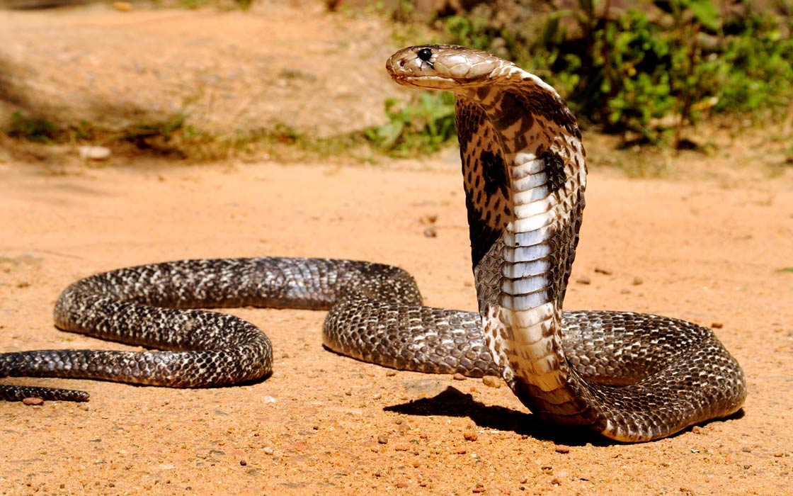

Kobra Indyjska!
Kobra Indyjska
Kobra indyjska zwana także okularnikiem (Naja naja) – gatunek jadowitego węża z rodziny zdradnicowatych, zamieszkujący Pakistan, Indie, Sri Lankę, Bangladesz, Nepal, Bhutan i prawdopodobnie wschodni Afganistan.
Ubarwienie brązowe lub piaskowe z charakterystycznym rysunkiem okularów na kapturze szyjnym, rozciąganym przez kobrę w chwili zagrożenia. Żywi się drobnymi kręgowcami, zwłaszcza gryzoniami. Często spotykana w pobliżu siedzib ludzkich, do których dociera w poszukiwaniu pożywienia. Dysponuje silnym jadem, składającym się z neurotoksyn. Ukąszenie człowieka może zakończyć się jego śmiercią, jeśli odpowiednio szybko nie zostanie podana surowica.
